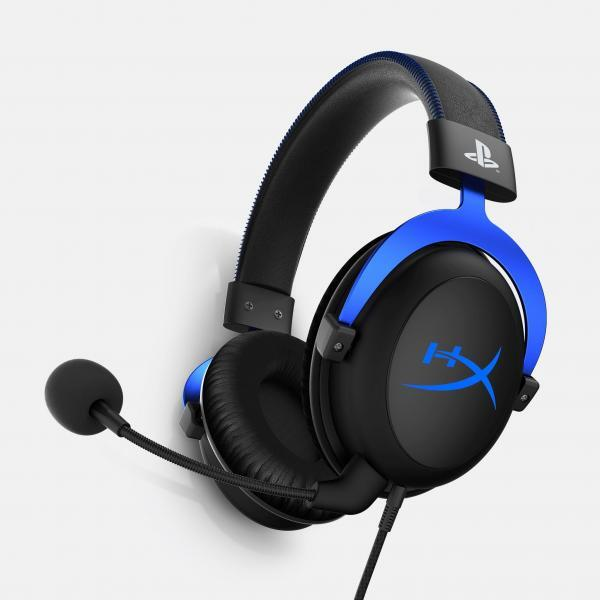
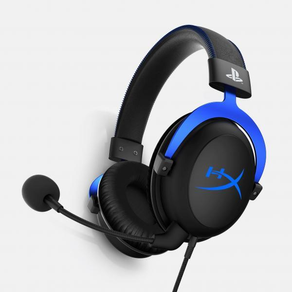

Általam használt perifériák
A következő perifériákat három platformon szoktam használni.
Amit PC-n használok általában iskolával kapcsolatos.


 

Ezek után jön a kikapcsolódásra használt perifériáim. PS4 pro-n szoktam videójátékokal játszani.